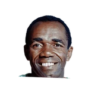

“He’d talk about shooting the bank shot. He always made the point that he had more rings than Michael Jordan. Sam had 10 championship rings and he’d say how people would talk about (Bill) Russell, then they would always skip him and K.C. Jones and go right to Michael.”

What NBA players and coaches have said about Sam Jones
3 quotes about Sam Jones from 3 players, coaches and executives, newest first. Each one links to its original source.
Quotes per season
Who talks about Sam Jones most
- Adam Silver1 quote
- Cedric Maxwell1 quote
 John Havlicek1 quote
John Havlicek1 quote
2021-22
2 quotesJared Weiss:Statement from Adam Silver:
“Sam Jones will be remembered as one of the most prolific champions in all of professional sports. His selfless style, clutch performances & signature bank shot were hallmarks of an incredible career that featured 10 NBA championships in 12 seasons.”
2014-15
1 quoteJohn Havlicek:
“If Oscar Robertson and Jerry West hadn't been around, Sam Jones would have been the best guard in the NBA.”